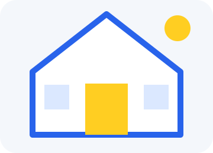
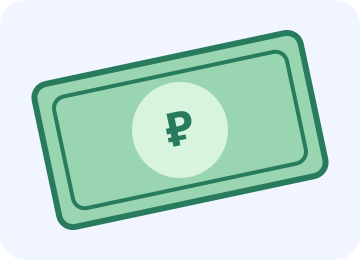

Подработка рядом
ЗАРАБАТЫВАЙ РЯДОМ С ДОМОМ

Мелкие домашние дела для соседей — удобная подработка даже после основной работы.

Мелкие домашние дела для соседей — удобная подработка даже после основной работы.
Сервис сам принимает обращения и готовит задания. Ты выбираешь, что выполнить.
Не нужно ехать через весь город. Получай предложения поблизости.
Задача, адрес, условия и твой заработок видны до принятия заказа.
Ассистент сервиса помогает заказчику описать работу и согласовать детали.
Бытовые навыки, отвертка и молоток — уже хорошее начало. Подай заявку мастера в профиле.
Как только появится подходящий заказ рядом, получишь сообщение и сможешь его взять.

После выполнения заказа сервис перечисляет тебе оплату.
Зарегистрируйся, открой профиль, подай заявку мастера и обязательно включи уведомления.